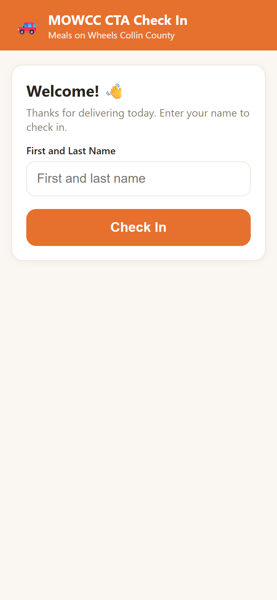
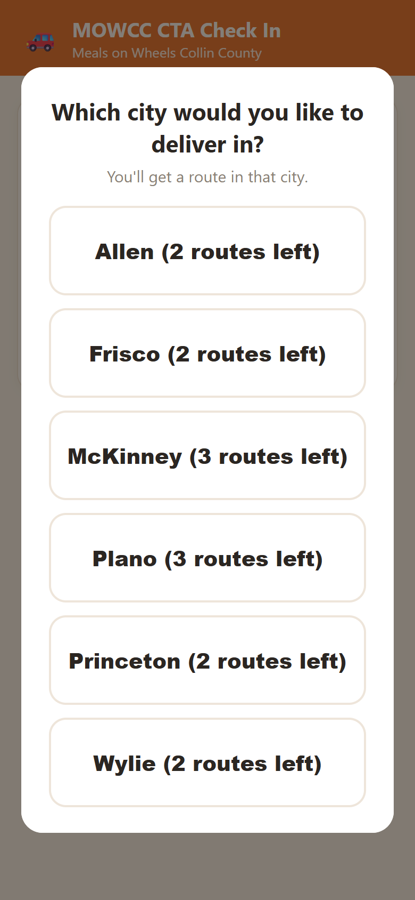
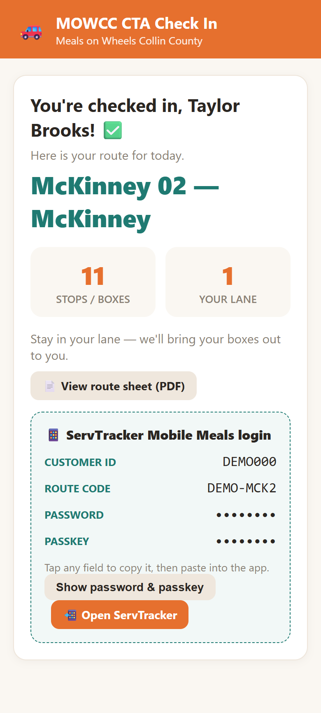

Volunteer Check-In
System
A QR-code check-in and route-assignment app for meal-delivery volunteers, with a live loading dashboard for staff. It's used on every delivery day.
- Node.js
- Express
- SQLite
- JavaScript
- Server-Sent Events
- Excel
This is a case study only. The source code and all operational data belong to Meals on Wheels Collin County and are not published. Every screenshot uses made-up sample data.
The problem
Meals on Wheels Collin County delivers meals to older and disabled neighbors across the county. On delivery days, dozens of volunteers pull into the loading area. Each one needs a delivery route, the login for that route in the delivery app, and their meal boxes brought to the right loading lane.
Without a system, staff had to track which routes were still open, read logins out loud, and keep track of who was in which lane, all while cars lined up.
The solution
Volunteers use a web app on their own phones, with nothing to download. They scan a QR code, type their name, and pick their lane and city. The app gives them a route right away: their regular route if it's open, otherwise the next open route based on rules staff choose.

1. Scan the QR code, enter your name

2. Choose a city (shows open routes left)

3. Route, stops, lane, and login, ready to go
At that same moment, the staff dashboard on the loading-area iPads pops up the volunteer's name, route, box count, and lane, with a chime. Loaders know exactly where to take the boxes. Staff can mark drivers as loaded and out, change a lane, or undo a check-in, which frees that route for the next volunteer.

Live staff dashboard (sample data)
Key features
- Three route-assignment modes staff can switch between: priority order, random, or by city. A volunteer's preferred route always comes first.
- Extra routes when there's capacity. A volunteer can take a second route in the same city, but only while enough open routes remain for everyone still expected that day.
- Admin panel for managing 90+ routes across about 12 cities, plus volunteers, lanes, and settings.
- Excel sync. Staff can bulk-edit routes and volunteers in a spreadsheet they already know, then import them back. Rows missing from the sheet are deactivated, never deleted.
- History and reporting. Staff can browse any past day and export all check-in history to Excel.
- A written SOP and operator guide so staff can run the system without me.
Design decisions
| Decision | Why |
|---|---|
| Web app, not a native app | Volunteers, many of them retirees, use their own phones. Nothing to download means no setup barrier. |
| Simple, low-cost stack (Node + SQLite) | The nonprofit has no IT department. It runs on an office PC and backs up by copying one file. |
| Secure public tunnel instead of paid cloud hosting | Volunteers load outdoors on cell data, so the app has to be reachable from the internet. This kept the hosting cost at $0. |
| Secret-key QR code, plus a PIN on staff pages | Only people at the loading area can check in or see route logins. |
| Check-ins are never hard-deleted | Staff can undo mistakes, and history stays complete for reporting. |
What I learned
- Designing for real users under time pressure, like a volunteer in a car line, means one decision per screen and very large buttons.
- Adoption matters more than sophistication. The Excel sync and the written SOP did as much for adoption as any technical feature.
- How to secure an app that has to be public, with protection matched to the real risk.